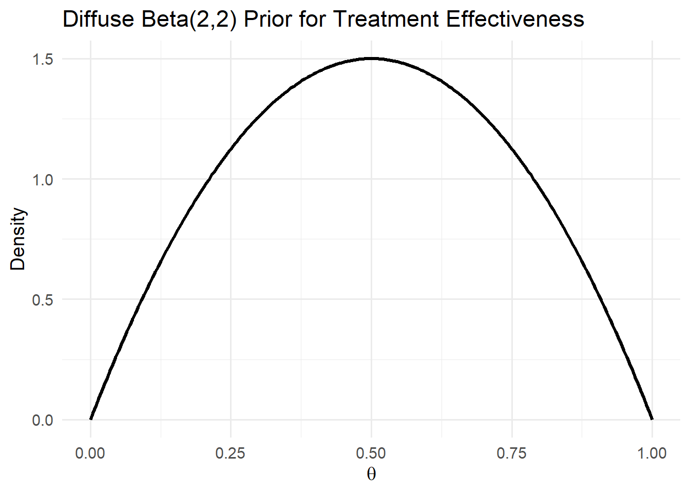
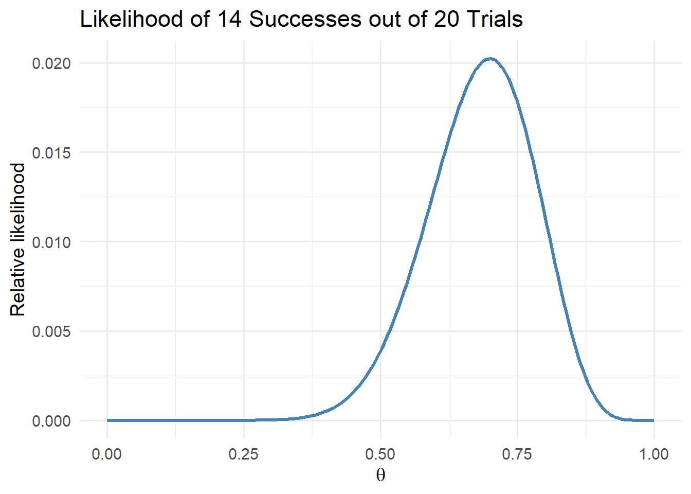
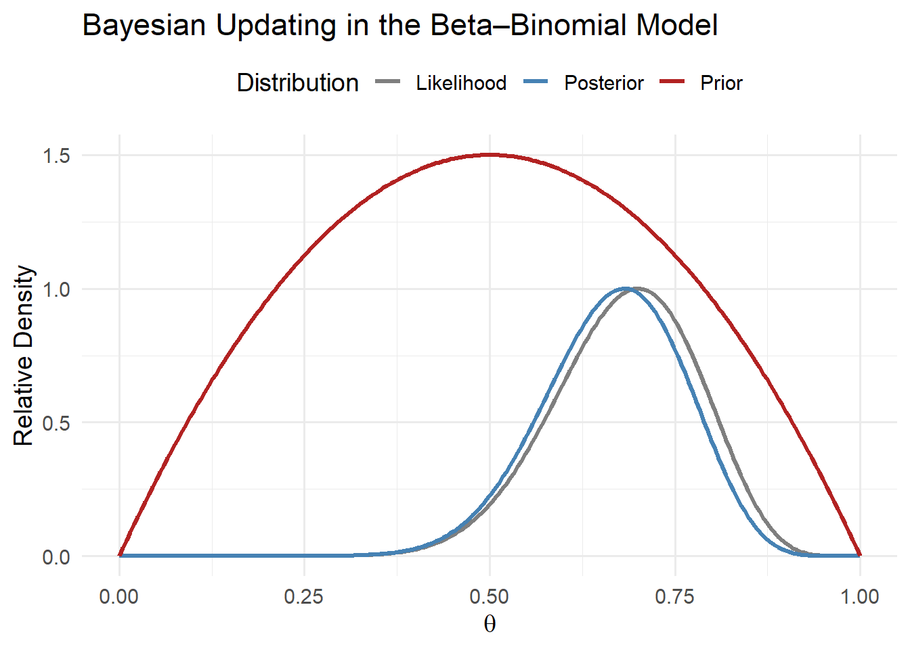

10 Physician Learning
As we’ve discussed in prior chapters, physicians wield considerable discretion in determining the treatments administered to patients and are therefore important factors in understanding variation in healthcare utilization across and within geographic areas. Such variation is propelled by several factors, including differences in information availability, personal beliefs, and financial incentives.
We’ve already covered the role of financial incentives, but variation in healthcare also reflects differences in how physicians learn from experience. As a result, two doctors treating similar patients may choose different tests or therapies—not necessarily because one is wrong, but because they hold different beliefs about what works best. Those beliefs reflect past experiences, medical training, and professional networks. Over time, physicians observe patient outcomes and revise their views. Understanding that learning process helps explain why healthcare practices evolve unevenly across physicians, hospitals, and regions.
In this chapter, we’ll see how those belief updates can be described using Bayes’ rule, one of the most powerful ideas in probability theory. We’ll start with simple examples of Bayesian updating, build up the formal mathematics, and then apply it to physician learning.
10.1 Bayes’ Rule
Before turning to physician learning, it is useful to start with the basic mechanics of Bayes’ rule, one of the central ideas in decision theory. Bayes’ rule describes how we update our beliefs when we receive new information. At its core, Bayes’ rule combines two pieces of information: 1) a prior belief, or what we think before seeing the data; and 2) new evidence, or what we observe from the data. Together, these yield an updated belief, called the posterior. Formally,
\[P(A|B) = \frac{P(B|A) \times P(A)}{P(B)},\]
where \(P(A|B)\) denotes the posterior or updated belief after seeing the data; \(P(B|A)\) denotes the likelihood or how likely the data are if \(A\) were true; \(P(A)\) denotes the prior or belief before seeing the data; and \(P(B)\) dentoes the marginal probability of observing \(B\) at all. This expression reads as “the probability of \(A\) given \(B\) equals the probability of \(B\) given \(A\), times the prior probability of \(A\), divided by the overall probability of \(B\).”
10.1.1 Example: Diagnostic Testing
A common illustration comes from diagnostic testing. Suppose 1% of a population has a disease, and a diagnostic test is 99% accurate — it correctly identifies disease when it is present and correctly rules it out when it is absent. If a patient tests positive, what is the probability they actually have the disease?
We can apply Bayes’ rule:
\[ P(\text{Disease} | \text{Positive}) = \frac{P(\text{Positive} | \text{Disease}) \times P(\text{Disease})} {P(\text{Positive})}. \]
The denominator, \(P(\text{Positive})\), accounts for all positive results, both true positives and false positives. Even though the test is highly accurate, the low base rate (only 1% prevalence) means most positive results are false positives. In this example, the posterior probability that the person actually has the disease is only about 50%.
This demonstrates a key feature of Bayes’ rule: our updated beliefs depend on both the quality of the evidence and the baseline probability of what we are testing for. Bayes’ rule therefore provides a disciplined way to update beliefs in light of new data. Every Bayesian model, including those used to study physician learning, begins with this principle.
10.1.2 From Events to Distributions
The version of Bayes’ rule we just saw applies to simple events: the probability of \(A\) given \(B\). In many applications, however, we want to think about distributions of possible values rather than discrete outcomes. For instance, a physician might be uncertain about a treatment’s effectiveness, represented by a continuous parameter \(\theta\) that could take any value between 0 and 1. As the physician observes patient outcomes, they update their belief distribution over \(\theta\).
In this case, Bayes’ rule generalizes from events to probability distributions:
\[ P(\theta | y) = \frac{P(y | \theta) \times P(\theta)}{P(y)}, \]
where \(P(\theta)\) is the prior distribution; \(P(y | \theta)\) is the likelihood function; \(P(\theta | y)\) is the posterior distribution; and \(P(y)\) is a normalizing constant, ensuring the posterior distribution integrates to 1. Since \(P(y)\) is constant with respect to \(\theta\), we often write:
\[ P(\theta | y) \propto P(y | \theta) \times P(\theta), \]
where the symbol \(\propto\) means “proportional to.” This proportional form highlights that the posterior distribution combines the shape of the prior and the shape of the likelihood. This expression shows how beliefs evolve in response to new evidence. The prior, \(P(\theta)\), captures what was known before, the likelihood, \(P(y | \theta)\), represents what the new data suggest (e.g., our observed outcomes based on the true quality, \(\theta\)), and the posterior blends the two, weighting each according to how informative the data are relative to the prior. Over time, as more evidence accumulates, the posterior distribution becomes more concentrated, reflecting increased certainty about \(\theta\). This is the mathematical foundation for learning from data—and, as we will see, it provides a powerful framework for understanding how physicians learn from experience.
10.2 The Beta–Binomial Learning Model
To make the ideas behind Bayesian updating more concrete, it helps to work through a simple example involving binary outcomes (i.e., situations where something either succeeds or fails). This setting is directly relevant to healthcare: a physician might observe whether a patient improves after a new treatment, or whether a surgical procedure “succeeds” or not. Each observation provides new information about the treatment’s true effectiveness. We will model this process using two probability distributions that fit naturally together: the Beta distribution (for beliefs about effectiveness) and the Binomial distribution (for observed successes and failures). Together, these form what is known as the Beta–Binomial model, a classic framework for illustrating learning in a Bayesian context.
10.2.1 The Binomial Distribution: Modeling Observed Outcomes
Suppose a physician treats \(n\) patients with a new therapy and observes \(s\) patients who improve. If each case is independent and has the same probability of success \(\theta\), then the total number of improvements follows a Binomial distribution:
\[ P(y = s | n, \theta) = {n \choose s} \theta^{s} (1 - \theta)^{n - s}, \]
where \(n\) is the number of independent trials (patients), \(s\) is the number of observed “successes” (improvements), and \(\theta\) is the probability of success for any individual case. The Binomial distribution gives us the likelihood, \(P(y | n, \theta)\), or the probability of observing \(s\) successes out of \(n\) trials given a particular value of \(\theta\).
10.2.2 The Beta Distribution: Modeling Prior Beliefs
Next, we need a way to represent the physician’s prior belief about \(\theta\), the true effectiveness of treatment. Because \(\theta\) must lie between 0 and 1, a natural choice is the Beta distribution, which is defined on the interval \([0, 1]\) and is the conjugate prior (Definition 10.1) for the Binomial distribution likelihood function. The Beta distribution has two shape parameters, \(\alpha\) and \(\beta\), that determine its mean, variance, and overall shape:
\[ P(\theta) = \frac{\theta^{\alpha - 1} (1 - \theta)^{\beta - 1}}{B(\alpha, \beta)}, \]
where \(B(\alpha, \beta)\) is a normalizing constant ensuring the density integrates to 1. The mean and variance are:
\[ E[\theta] = \frac{\alpha}{\alpha + \beta}, \quad Var(\theta) = \frac{\alpha \beta}{(\alpha + \beta)^2 (\alpha + \beta + 1)}. \]
The Beta distribution is extremely flexible. When \(\alpha = \beta = 1\), it is uniform over \([0, 1]\), representing no strong prior belief; when \(\alpha > \beta\), beliefs are shifted to higher values of \(\theta\) (optimism); and when \(\alpha < \beta\), beliefs shift toward lower values of \(\theta\) (skepticism).
Definition 10.1 (Conjugate Priors) In Bayesian analysis, a conjugate prior is a prior distribution that, when combined with a particular likelihood, yields a posterior that is in the same family of distributions. Conjugate priors make the math tractable and the interpretation straightforward. For the Binomial likelihood, the Beta distribution is conjugate. This means that if the prior is \(Beta(\alpha_0, \beta_0)\) and the data are Binomial, the posterior will also follow a Beta distribution, with updated parameters reflecting both the prior information and the new evidence. This property is especially convenient for modeling physician learning as it lets us express belief updating in simple, interpretable terms while maintaining a realistic parameter space (\(0 \leq \theta \leq 1\)).
10.2.3 The Posterior Distribution
Applying Bayes’ rule, the posterior distribution for \(\theta\) after observing \(s\) successes out of \(n\) trials is proportional to the product of the likelihood and the prior. This is directly from Bayes’ rule.
\[ P(\theta | y) \propto P(y | \theta) \times P(\theta). \]
Substituting the Binomial likelihood and the Beta prior gives:
\[ P(\theta | y) \propto \theta^{s} (1 - \theta)^{n - s} \times \theta^{\alpha_0 - 1} (1 - \theta)^{\beta_0 - 1} \propto \theta^{\alpha_0 + s - 1} (1 - \theta)^{\beta_0 + n - s - 1}, \]
where terms unrelated to \(\theta\) are normalization factors and do not enter into the proportional representation. Thus, the posterior is again a Beta distribution:
\[ \theta | y \sim Beta(\alpha_1, \beta_1), \]
where the updated (posterior) parameters are:
\[ \alpha_1 = \alpha_0 + s, \quad \beta_1 = \beta_0 + n - s. \]
This result illustrates how the physician’s beliefs evolve as new evidence accumulates. The updated mean is:
\[ E[\theta | y] = \frac{\alpha_1}{\alpha_1 + \beta_1} = \frac{\alpha_0 + s}{\alpha_0 + \beta_0 + n}. \]
The larger the sample size \(n\), the more influence the data have relative to the prior, and the more the posterior mean moves toward the observed frequency \(s/n\). The Beta–Binomial model therefore provides a simple, intuitive way to represent learning from binary outcomes. The Beta prior captures prior beliefs about treatment effectiveness, while the Binomial likelihood captures the evidence. Bayesian updating combines the two to form an updated posterior belief that always stays within the same family of distributions.
10.2.4 Visualizing the Beta–Binomial Model
It is often easier to understand Bayesian updating by seeing how the prior and likelihood combine to form the posterior. In the Beta–Binomial model, the prior, likelihood, and posterior are functions of the same parameter, \(\theta\). The following examples show how beliefs evolve as new data arrive.
Step 1: Plot the Prior
Let’s begin with a relatively diffuse prior, representing a physician who has little prior knowledge about a new treatment’s effectiveness. We’ll use \(Beta(2,2)\), which places moderate weight across the whole \([0,1]\) interval.
This prior is symmetric around 0.5, expressing mild uncertainty but no strong opinion.
Step 2: Plot the Likelihood
Suppose the physician treats \(n = 20\) patients and observes \(s = 14\) improvements. The likelihood of the data, \(P(y | \theta)\), reflects how probable this outcome would be under different assumed values of \(\theta\).

The likelihood peaks around \(\theta = 0.7\), indicating that the data are most consistent with a success probability near 70%.
Step 3: Combine Prior and Likelihood to Form Posterior
Because the Beta prior is conjugate to the Binomial likelihood, we can compute the posterior analytically. With \(\alpha_0 = 2\) and \(\beta_0 = 2\), the posterior parameters become, \(\alpha_{1} = \alpha_{0} + s = 16\) and \(\beta_{1} = \beta_{0} + n - s = 8\).

This figure shows how new data move the physician’s beliefs:
- The prior (red) expresses initial uncertainty.
- The likelihood (gray) represents the evidence from observed outcomes.
- The posterior (blue) shifts toward the data, reflecting stronger belief that \(\theta\) lies near 0.7.
Step 4: Interpretation
After observing these data, the posterior mean becomes
\[ E[\theta | y] = \frac{\alpha_1}{\alpha_1 + \beta_1} = \frac{16}{24} \approx 0.67. \]
The posterior is more concentrated than the prior, reflecting greater confidence in the treatment’s effectiveness. If the physician continues to observe additional patients, this process repeats, where each new piece of information nudges the posterior toward the true underlying value of \(\theta\).
10.3 Some Examples
To contextualize these ideas, let us consider two illustrative cases that highlight how physician learning can shape healthcare variation. Assume that physicians observe the same evidence: 70 out of 100 patients improve after receiving a new treatment.
10.3.1 Case 1: Diffuse Priors and Belief Convergence
A diffuse prior reflects a physician who has no strong beliefs about the effectiveness of the treatment. Formally, this corresponds to a uniform prior, \(Beta(\alpha_0 = 1, \beta_0 = 1)\).
Following the updating rule from the previous section, the posterior parameters are:
\[ \alpha_1 = \alpha_0 + s = 71, \quad \beta_1 = \beta_0 + n - s = 31. \]
The posterior mean is:
\[ \mu = \frac{\alpha_1}{\alpha_1 + \beta_1} = \frac{71}{71 + 31} \approx 0.697. \]
In this case, the posterior mean almost exactly matches the observed success rate of 70%, meaning that the physician’s belief quickly converges toward the data. Diffuse priors lead to faster learning because the prior exerts little influence relative to the new evidence.
10.3.2 Case 2: Strong Priors and Slower Updating
Now consider a physician with strong negative priors (e.g., a strong belief that the new treatment is unlikely to work). We can represent this with \(Beta(\alpha_0 = 1, \beta_0 = 20)\).
After observing the same data (70 successes out of 100), the posterior parameters become:
\[ \alpha_1 = 1 + 70 = 71, \quad \beta_1 = 20 + 30 = 50. \]
The posterior mean is:
\[ \mu = \frac{\alpha_1}{\alpha_1 + \beta_1} = \frac{71}{71 + 50} \approx 0.586. \]
Even though this physician saw the same outcomes as before, their posterior belief remains more pessimistic. Because their prior belief carried more weight, they adjust less in response to the new data. This captures an essential feature of Bayesian learning: priors anchor beliefs, and the strength of that anchor determines how quickly learning occurs.
10.4 Discussion
These examples highlight how differences in priors can translate into variation in medical practice. Physicians with diffuse priors will update their beliefs quickly and may adopt new technologies or treatments more readily. Physicians with strong priors, whether optimistic or skeptical, will adjust more slowly, leading to persistent heterogeneity in care patterns even when everyone observes the same evidence. From a broader perspective, this framework provides some structure for examining learning as a potential driver of variation in healthcare utilization, where physician’s decisions reflect not only their current information but also the path of their past experiences and beliefs.